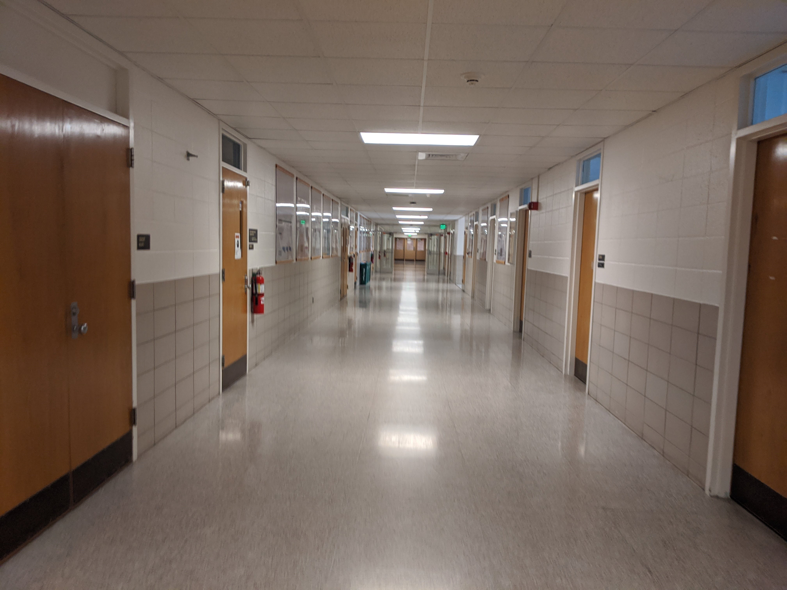

Visiting Engineering Building During a Pandemic
Written on the , by David Moruzzi
| Date | Trained | Visited |
|---|---|---|
| 08-25-2020 | No | No |
| 08-27-2020 | Yes | No |
| 08-29-2020 | Yes | Yes |
As a student at Michigan State University, I frequently wondered what was happening inside the now-abandoned buildings per the recent move to remote learning. The 2019 novel coronavirus pandemic forced everyone out - in fact, very suddenly. I knew from jogging on campus that the majority of buildings were empty. The desolate parking lots surrounding all major staples of Michigan State University only further impounded this eerie sense of abandonment. Michigan State was closed. I only saw a handful of other people on campus, mostly just MSU Police driving aimlessly on the newly unobstructed roads. From my previous five years at MSU, I knew the roads were unusually silent.
However, my curiosity about what was happening inside the empty buildings on campus was soon to end. I knew from working remotely as an information technology technician for the College of Engineering that a large heap of computers needed to be serviced. I saw the daily emails. I knew ticket numbers. I knew something had to be done soon. On Tuesday, the 25th of August, my supervisor and the Dean's office agreed that I needed to go into the office. Soon after that, I was visiting the now abandoned engineering building. The safety training took several hours, where it was thoroughly explained to me that I must wear a mask, I must adhere to social distancing, I must take a temperature test, etc. I passed all the safety precautions and completed all the mandatory content before entering the building.
The building was noiseless. In the thousands of hours I have spent in the Engineering Building, I had become accustomed to the loud hustle and bustle. I became accustomed to the thousands of students exploring the halls endlessly, the vending machine clunking in it's louder than life nature, even the buzzing of the fluorescent lights above. I heard nothing. The halls were empty, the machines were off, the building was silent. Making my way through the building, the once lit offices all hid in darkness. The entire building felt foreign. Slowly, I made my way into my work's Support Office; I saw nothing had moved. Despite nearly four months passing since I was last in the building, nothing had changed. At the same time, everything had changed. While the Diet Coke I left inside the refrigerator remained there, it was warmer than ever because someone unplugged it. While my family and friends' thoughts are forever with me, like the Diet Coke stuck inside my unplugged refrigerator, somethings had become oddly metallic and will never be the same again.